이 글은 전체 2편 중 1편입니다. 긴 영상을 주제 흐름에 맞춰 나누어 정리했습니다.
이 글은 전체 2편 중 1편입니다.
채널: work view | 길이: 36:49 | 날짜: 20260611
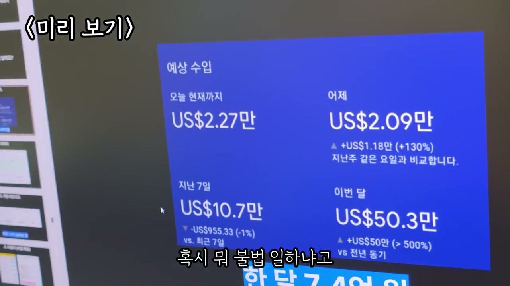
영상은 구글 기반 수익이 이미 큰 규모로 발생했다는 강한 장면에서 시작한다. 출연자는 구글로 약 2억 3천만 원이 벌렸다고 말하고, 진행자는 “우와”, “대박이다”라고 반응한다. 이어 광고가 보이는지 확인하며, 사람들이 이런 광고 노출 구조를 만들어 실제로 돈을 번다고 설명한다.
그는 이 구조를 “온라인 건물”이라고 부른다. 오프라인 건물은 임대료나 매장 매출을 통해 수익을 만들지만, 온라인에서는 글과 페이지가 검색 유입을 받고 광고를 보여 주면서 수익을 만든다는 논리다. 중요한 점은 글이 한 번 만들어진 뒤에도 계속 검색되고, 사용자가 들어올 때마다 광고 노출과 클릭 가능성이 생긴다는 것이다.
이 장면에서 그는 “돈을 어떻게 버느냐에 대한 메커니즘”을 보여 주겠다고 말한다. 가장 간단히 정리하면 블로그를 개선하고, 승인용 글을 작성하고, 광고 승인을 받는 것이 출발점이라고 설명한다. 그는 자신이 100% 합격하는 PDF를 만들었고, 컴퓨터를 잘 못하는 사람을 위해 버튼까지 캡처해 놓았으니 내용을 복사해 붙여 넣으면 SEO에 맞는 글이 작성된다고 주장한다.
출연자는 애드센스로 가장 많이 벌었던 때가 한 달에 53만 달러였다고 말한다. 현재 환율 기준으로 매우 큰 금액이기 때문에, 은행에서 전화가 와서 “혹시 불법이냐”고 물었다는 일화를 덧붙인다. 이 이야기는 수익 규모가 일반적인 감각을 벗어날 만큼 컸다는 점을 강조하는 장치다.
다만 그는 일부 핵심 방법은 알려줄 수 없다고 말한다. 어떤 부분을 이야기하면 담당자에게 혼나기 때문에 알려줄 수 없고, 실제로 한 시간 넘게 혼났다고 설명한다. 진행자가 “영상 보는 분들에게만 알려주면 안 되냐”고 묻지만, 그는 자신도 먹고 살아야 하기 때문에 죄송하다고 답한다.
이 대목은 영상 전체의 긴장감을 만든다. 한편으로는 “누구나 할 수 있다”, “무조건 하라”고 말하면서, 다른 한편으로는 핵심 수익 노하우 일부는 보호해야 한다고 선을 긋는다. 즉 영상은 무료 공개 정보와 유료·비공개 노하우 사이의 경계를 계속 활용한다.
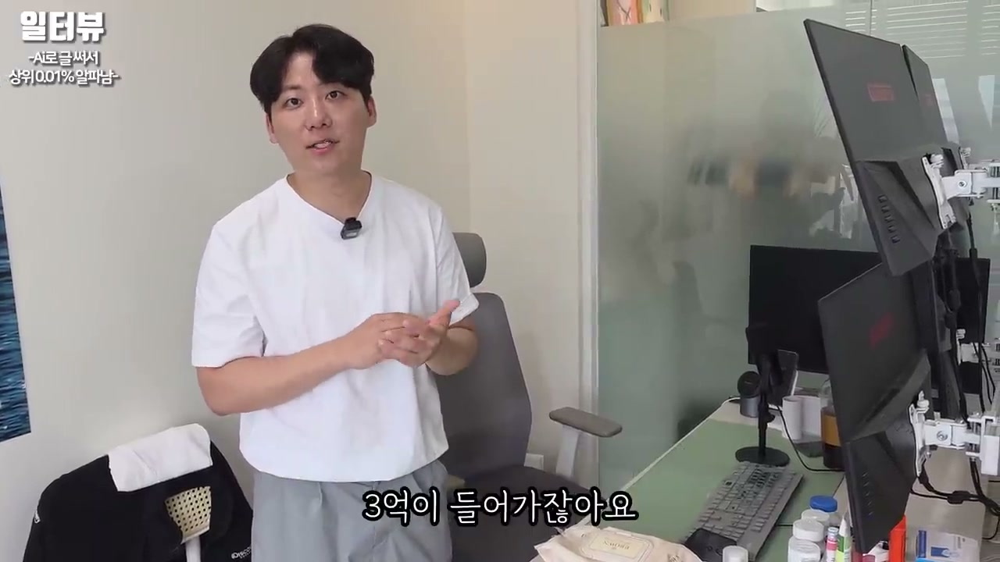
출연자는 자신을 1992년생 김지수, 구글 부업으로 60억 원을 쓸어담고 있는 사람이라고 소개한다. 사무실에는 자리가 많이 있고, 진행자는 직원이 몇 명인지 묻는다. 그는 정직원은 20명이 넘고 프리랜서까지 합치면 50~60명 정도 된다고 답한다.
회사 매출은 50억~60억 원 정도이고, 순수익은 30억~40억 원 정도라고 말한다. 진행자가 순수익률이 너무 높은 것 아니냐고 묻자, 출연자는 담당 세무사가 자신이 맡은 300개 업체 중 순수익률 기준 1등이라고 했다고 말한다. 이 설명은 물리적 상품 판매가 아니라 온라인 광고와 콘텐츠 수익 구조이기 때문에 가능하다는 논리로 이어진다.
그는 “물건을 파는 것이 아니라 온라인으로 돈을 번다”고 정리한다. 온라인이라 재고가 없고, 투자금이 크게 들어가지 않으며, 사실상 들어가는 돈은 인건비밖에 없다고 말한다. 따라서 순수익률이 높을 수밖에 없는 구조라고 주장한다.
오프라인 매장을 하나 차리려면 3억 원이 들어가고, 매장이 잘돼서 2호점을 내려면 몇 달이 걸리고 또 3억 원이 들어간다는 예시가 나온다. 이는 일반 창업의 자본 부담과 확장 지연을 설명하기 위한 비교다. 출연자는 오프라인 사업은 돈과 시간이 동시에 묶이는 구조라고 본다.
반대로 온라인 건물은 하나가 월 300만~500만 원 정도 나오면, 하나 더 만드는 것이 어렵지 않다고 말한다. 바로 만들 수 있고, 비용이 거의 들지 않으며, 실패해도 큰 손실이 없다는 점을 강조한다. 그래서 확장 속도가 빠르고 리스크가 낮은 것이 가장 큰 장점이라고 설명한다.
그가 꼽는 그나마의 리스크는 인건비다. 사업이 잘된다고 해서 팀원을 너무 많이 뽑으면 고정비가 늘어나고, 그때부터 부담이 생긴다고 말한다. 재고나 임대료보다 조직 확장 비용이 온라인 사업의 핵심 위험이라는 관점이다.
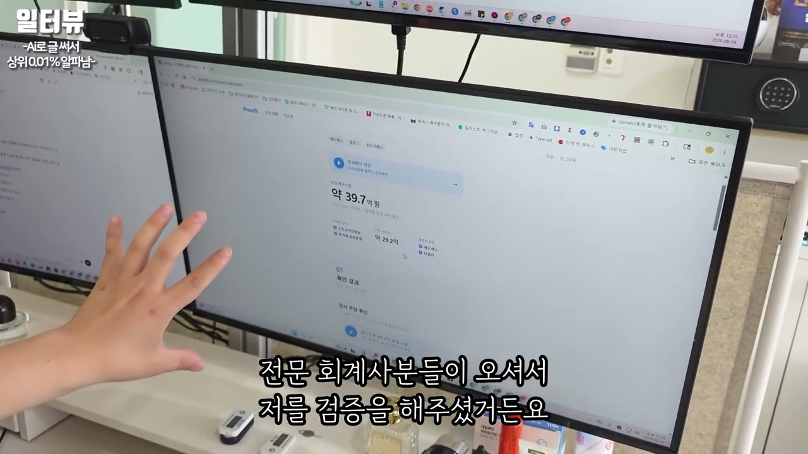
진행자는 “구글 부업으로 현금을 쓸어담고 있다”고 했는데 바로 계좌를 보여줄 수 있냐고 묻는다. 출연자는 바로 보여주겠다고 하고, 계좌를 새로고침해 약 70억 원 정도가 있다고 말한다. 하지만 그는 이런 계좌 자료도 조작 가능하다는 이야기가 있다는 점을 인정한다.
그래서 자신이 조작할 수 없는 자료까지 보여주겠다고 말한다. 사람들이 “홈택스 깔아라”, “국세청 인증해라”라고 요구했기 때문에 전문 회계사에게 맡겼다고 설명한다. 회계사들이 홈택스 자료와 구글에서 받은 돈 자료를 제출받아 교차 검증했고, 그 결과를 인증해 주었다고 말한다.
그는 누적으로 오로지 구글만으로 번 돈이 40억 원이고, 그중 순수익이 30억 원이라고 주장한다. 이 부분은 단순히 돈을 벌었다는 자랑이 아니라, 영상의 핵심 신뢰 장치로 기능한다. 출연자는 “검증하는 업체”와 “전문 회계사”를 언급하며 자신의 수익 주장을 객관화하려고 한다.
출연자는 온라인이 좋은 이유를 “글 하나에서 전국, 전 세계로 팔 수 있기 때문”이라고 설명한다. 물리적 매장은 지역과 공간의 한계가 있지만, 온라인 글은 검색만 되면 어디서든 접근할 수 있다. 그래서 한계가 없고, 천장이 없다는 표현을 사용한다.
국내에는 네이버 블로그라는 생태계가 있지만, 해외는 구글과 애드센스 기반으로 움직이는 경우가 많다고 말한다. 그는 해외에서는 온라인 부업으로 치면 이것밖에 없다고 표현할 정도로 구글 기반 수익화를 크게 본다. 한국인은 상대적으로 이 구조를 늦게 알았고, 이제야 막 따라오는 추세라고 진단한다.
이 주장은 뒤에서 플랫폼 비교로 이어진다. 네이버·다음·카카오 같은 국내 플랫폼보다 구글이 더 크고, 더 오래 밀어주며, 더 많은 돈을 줄 수 있는 구조라고 그는 반복한다. 핵심은 검색 기반 트래픽과 광고 수익 분배를 이해하는 사람에게 기회가 열린다는 것이다.
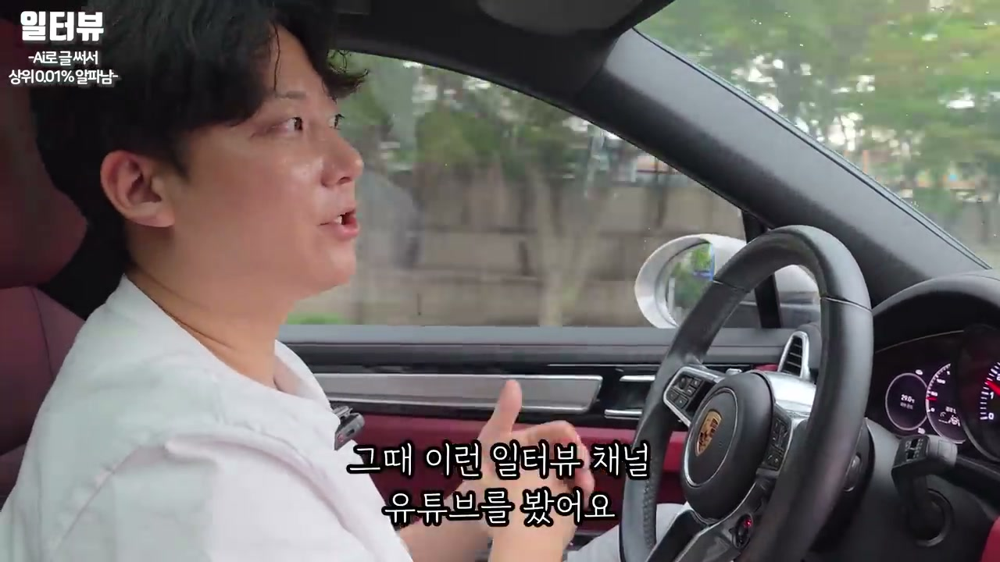
출연자는 29살 때 대주전공이라는 자동차 부품 회사에서 회장 비서로 일했다고 말한다. 표현은 비서였지만 사실상 운전기사에 가까웠다고 설명한다. 이 배경은 영상 제목의 “운전기사 출신”이라는 서사와 연결된다.
출퇴근 시간은 30분 정도였고, 그때 인터뷰 채널 유튜브를 보다가 어떤 사람이 구글 블로그로 월 2천만 원을 번다는 이야기를 들었다. 주변에도 운 좋게 그걸로 몇억 원을 번 친구가 있었기 때문에, 그는 이것이 실제로 돈이 되는 시장이라고 판단했다. 문제는 어떻게 하는지 몰랐다는 점이었다.
그 사람이 유튜브로 방법을 알려주는 것을 보고, 그는 “이거다”라고 느꼈다. 퇴근 후 집에서 계속 시도했고, 실제로 첫 달 300만 원, 둘째 달 500만 원, 셋째 달 700만 원을 벌었다고 말한다. 이 초반 성공 경험이 이후 전업과 사업화의 출발점으로 제시된다.
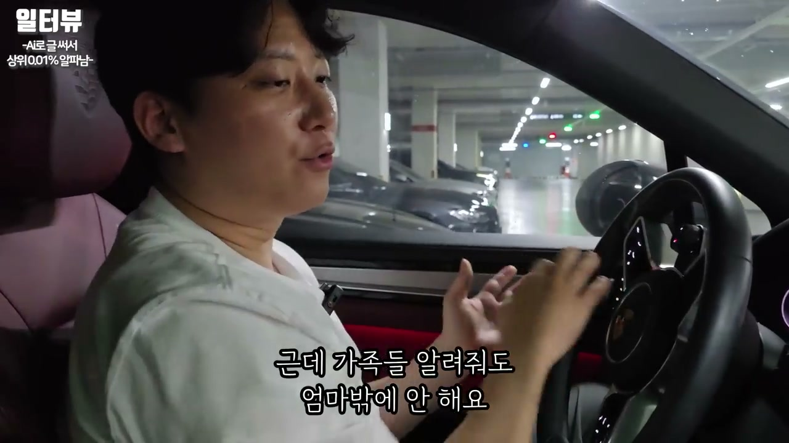
출연자는 블로그로 돈이 안 된다고 말하는 사람들을 강하게 비판한다. 그는 그 사람들이 스스로 못해서 안 되는 것인데, 마치 시장이 안 되는 것처럼 핑계를 댄다고 말한다. 안 된 사람들은 안 된 사람끼리 모여 계속 안 된다고 하고, 된 사람들은 된 사람끼리 만나 어떻게 더 벌지 이야기한다고 설명한다.
그는 돈 버는 것은 정보 싸움이라고 본다. 안 될 것도 되게 만들어야 하는데, 될 것도 안 된다고 말하면 아무것도 되지 않는다고 한다. 자신은 가능한 방법을 찾아내고 구조를 파악하는 쪽에 서야 한다고 강조한다.
가족에게 알려주지 않느냐는 질문에 대해서는, 알려줘도 잘 안 한다고 답한다. 가족 중에는 어머니만 하고, 성한이라는 사람에게 아무리 하라고 해도 하지 않고 주식·코인 투자만 하다가 돈을 잃는다고 말한다. 반면 축구 친구들에게 알려주었더니 친구들의 부모님들이 재미있게 하고 돈도 벌고 있다고 한다.
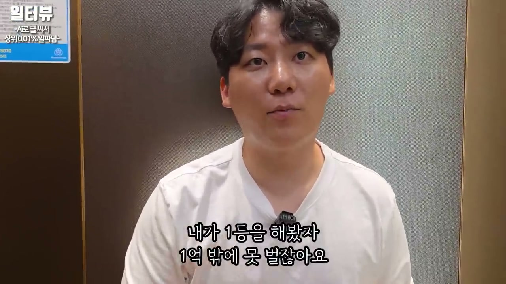
출연자는 자신이 구글 부업을 선택한 이유로 안정성, 얼굴 노출 없음, 낮은 리스크, 높은 시장 천장을 든다. 그는 “리스크 있는 것”을 싫어하고, 천장이 없어야 한다고 말한다. 즉 작은 시장에서 1등을 하는 것보다, 큰 시장에서 10등을 해도 더 많이 벌 수 있는 구조를 선호한다.
그는 1억 원짜리 시장에서는 1등을 해도 1억 원밖에 못 벌지만, 1조 원짜리 시장에서는 10등을 해도 1억 원을 벌 수 있다고 비유한다. 이 비유는 블로그·검색 광고 시장을 선택하는 기준을 설명한다. 노력의 절대량보다 시장의 크기와 구조가 더 중요하다는 주장이다.
이 장면은 출연자가 단순히 “블로그를 하라”고 말하는 것이 아니라, “큰 시장의 구조를 타라”고 말하고 있음을 보여 준다. 그는 구글 광고 시장이 크고, 검색이 계속 필요하며, 글로벌 플랫폼이 잘하는 사람을 더 밀어준다고 본다. 그래서 구글 기반 콘텐츠 수익화를 천장이 큰 시장으로 해석한다.
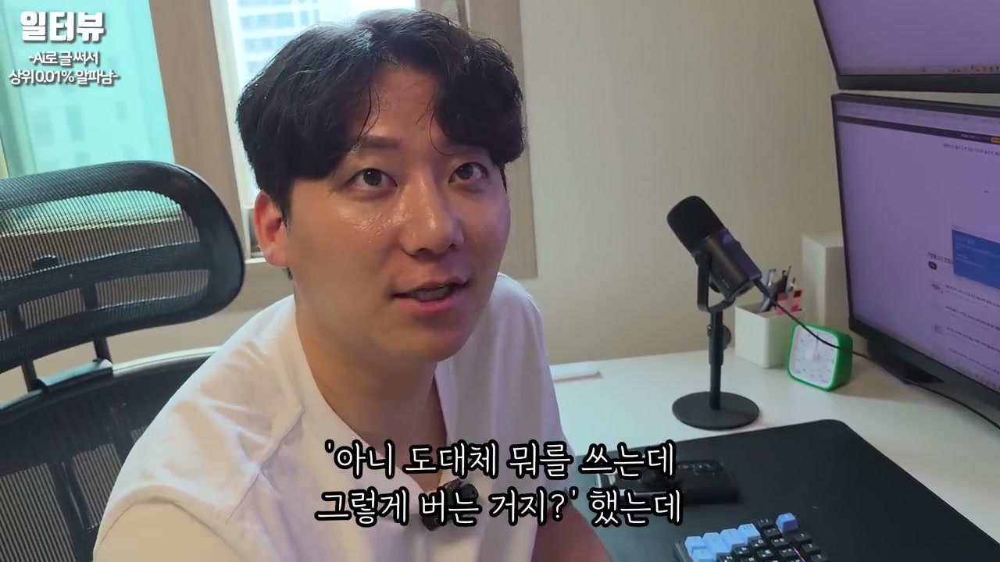
출연자는 자신이 500만 원짜리 강의에서 들었던 내용을 소개한다. 어떤 사람이 방송 글을 써서 2천만~3천만 원씩 번다고 했고, 그는 “도대체 뭘 쓰는데 그렇게 버는 거지?”라고 생각했다고 한다. 그 답으로 나온 것이 생활 정보 프로그램을 활용한 검색 키워드 전략이다.
예를 들어 저녁 6시 이후에 방송되는 ‘생활의 달인’, ‘생생정보’ 같은 프로그램은 어른들이 많이 본다고 설명한다. 방송에 ‘영덕 깻잎치’ 같은 음식이나 상품이 나오면 사람들은 맛있어 보이는 것을 보고 “어디서 사야 하지?”, “구매 방법은?”, “가격은?”, “홈페이지는?”, “연락처는?”, “위치는?”을 검색한다. 출연자는 바로 그 검색어를 글 안에 넣는다고 말한다.
그는 실제로 판매자나 관련 사람을 찾아 연락처를 남겨 두었고, 사람들이 자신의 블로그를 보고 많이 샀다고 한다. 판매자도 고맙다고 했으며, 그는 그 글 하나로 하루에 370만 원을 벌었다고 말한다. 이 사례는 영상 제목의 “글 한 줄이 매출을 뒤엎었다”는 메시지를 가장 직접적으로 설명하는 대목이다.
출연자는 이 깻잎치 글 사례를 자신의 과거 노동 경험과 대비한다. 그는 예전에는 노가다를 뛰며 하루 12시간 일해야 15만 원을 벌었다고 말한다. 20일을 일해야 300만 원을 벌 수 있는데, 글 하나가 하루에 370만 원을 벌었다는 사실에 큰 충격을 받았다고 한다.
그는 “내가 알던 세상에 이게 맞나?”라고 표현한다. 자신이 알고 있던 노동과 돈의 관계가 완전히 무너졌다는 뜻이다. 이 경험은 단순한 수익 사례가 아니라, 그의 세계관이 바뀐 순간으로 제시된다.
또 하나의 사례로, 글 한 개로 8천 달러 정도를 벌었고, 원화로는 1천만 원 정도 된다고 말한다. 자고 일어나면 4,500만 원이 벌려 있는 경우도 있었고, 1천만 원 이상 번 글이 100개가 넘는다고 주장한다. 이처럼 영상은 반복적으로 “글 하나가 계속 돈을 만든다”는 이미지를 쌓아 간다.
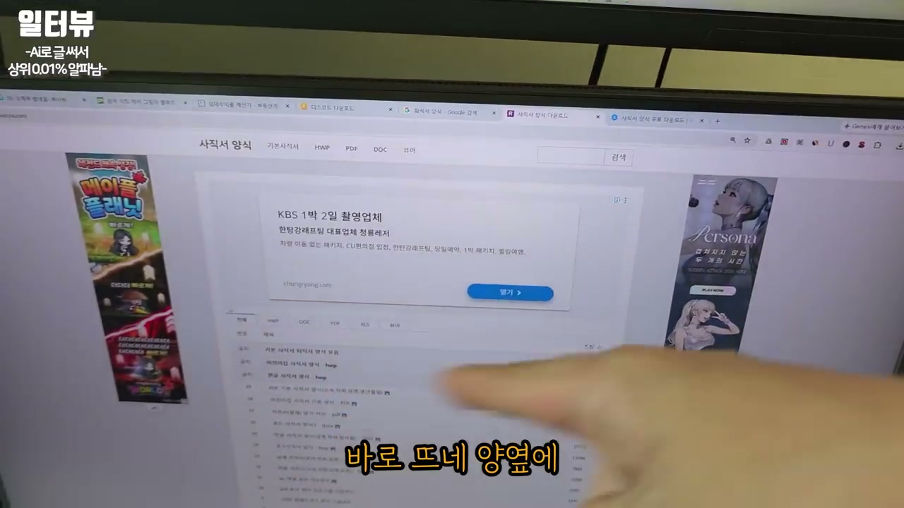
출연자는 특정 웹페이지를 예로 들며 광고가 어떻게 노출되는지 보여 준다. 사람들은 계산기, 퇴직 양식, 아파트 관련 정보처럼 필요한 정보를 찾기 위해 페이지에 들어온다. 그 페이지에는 양옆이나 중간, 아래쪽에 광고가 붙고, 방문자는 정보를 이용하면서 광고를 보게 된다.
그는 이런 페이지도 “온라인 건물”이라고 말한다. 방문자가 계산기를 쓰러 오거나 양식을 찾으러 올 때마다 광고 노출이 발생하기 때문이다. 핵심은 사람들이 실제로 필요해서 검색하는 정보를 먼저 만들고, 그 정보 옆에 광고가 자연스럽게 붙게 하는 것이다.
광고가 보이는지 진행자에게 묻고, 진행자는 이제 보인다고 답한다. 출연자는 사람들이 이런 구조를 만들어 수익을 얻는다고 설명한다. 이 대목은 단순한 블로그 일기가 아니라, 검색 수요가 있는 기능성·정보성 페이지가 광고 수익의 기반이 된다는 점을 보여 준다.
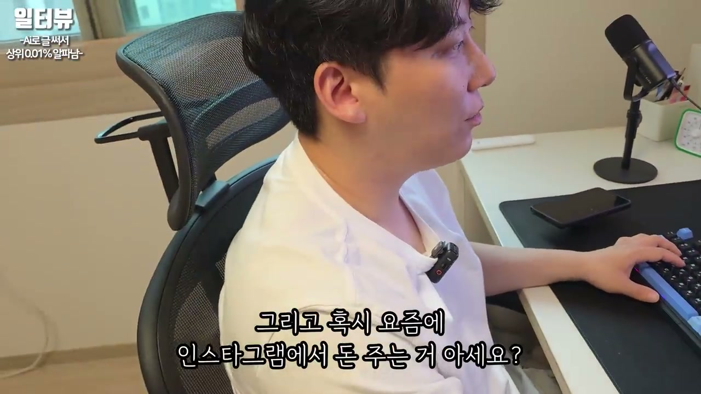
출연자는 자신이 운영하는 웹사이트와 인스타그램 등을 합치면 100개가 넘는다고 말한다. 이런 채널들이 잘 올라가고 있는지 확인하는 프로그램 같은 것도 만들어 점검한다고 한다. 그는 글 하나로 “뽕을 뽑아야 한다”는 표현을 쓰며, 하나의 콘텐츠를 여러 포맷으로 재활용해야 한다고 강조한다.
예를 들어 유튜브 롱폼 영상을 만들면 그것을 글로 만들고, 카드뉴스로 만들고, 뉴스처럼 다시 만들고, 스레드에 올리는 식이다. 돈이 될 수 있는 곳에는 모두 올려야 한다고 말한다. 진행자가 “계속 재탕하는 거네요”라고 하자, 그는 재탕한다고 다 돈이 되는 것은 아니며 돈이 될 수 있게 재탕해야 한다고 답한다.
이 차이가 중요하다. 단순 복제는 수익이 되지 않고, 플랫폼별 구조와 사용자의 의도에 맞게 다시 구성해야 한다는 뜻이다. 그는 돈 버는 구조를 파악하는 것이 가장 중요하다고 반복한다.
출연자는 애드센스 수익을 보여달라는 요청에 최근 3년치 수익만 보인다고 말한다. 계정이 여러 개인데 하나를 보여주면 42만~43만 달러 정도이고, 환율이 올라 원화로 약 7억 원 정도 된다고 설명한다. 이것은 하나의 계정 기준이며, 다른 보너스성 수익이 여러 곳에서 들어온다고 말한다.
그중 하나로 타불라라는 해외 회사를 언급한다. 국내 사람들은 잘 모르는 해외 광고 플랫폼이라고 설명하며, 여기서도 추가로 3억 원 정도가 들어온다고 한다. 그는 이것을 정보 격차라고 부르고, 대부분 사람들이 이런 수익 루트를 모른다고 말한다.
또 인스타그램과 페이스북에서도 돈이 들어온다고 설명한다. 현재 영상은 돈을 안 주지만 카드뉴스는 돈을 준다고 말하고, 자신들의 인스타 계정이 1.2만 개 정도 된다고 한다. 페이스북·인스타그램 쪽에 4만 달러가 쌓였고, 약 7천만 원 정도의 보너스라고도 언급한다.
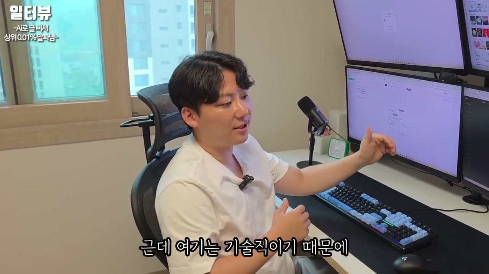
구글 부업에 돈이 들어가느냐는 질문에, 출연자는 하나도 안 들어간다고 답한다. 편하게 하고 싶다면 AI 구독 정도는 할 수 있지만, 그것도 요즘 사람들은 다 하고 있다고 말한다. 돈이 들어갈 게 없는데 왜 안 하느냐는 태도다.
그러나 그는 동시에 이 일이 기술직이라고 강조한다. 온라인에서 돈 버는 일은 프로의 세계이고, 기술을 배워야 하는데 사람들은 투자를 하지 않고 공짜로만 하려고 한다고 비판한다. 그래서 망하는 사람들의 공통점은 배움과 투자를 하지 않는 것이라고 말한다.
그는 자신이 지금까지 강의비만 1억 5천만 원 정도를 투자했고, 시간으로는 1만 시간 이상 썼을 것이라고 말한다. 이만큼 했기 때문에 벌 수 있었는데, 사람들은 투자하지 않으려 한다고 설명한다. 유튜브도 프로의 세계이고 경쟁이 치열한 것처럼, 블로그 수익화도 덜 치열할 수는 있어도 공부 없이 막 쓰면 돈이 안 된다고 말한다.
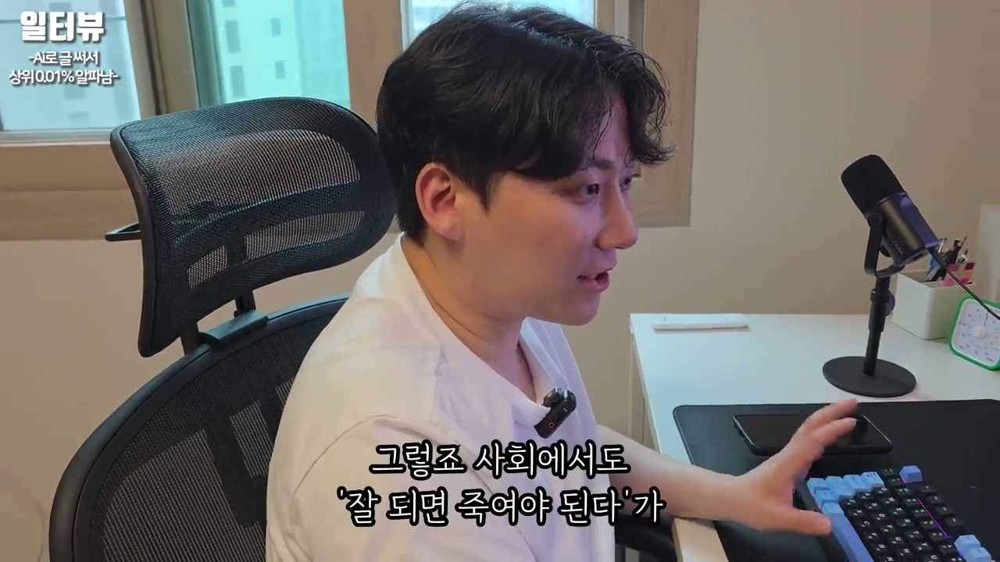
출연자는 국내 플랫폼에 대해 상당히 비판적이다. 우리나라 플랫폼은 누군가 돈을 많이 벌면 신고하거나, 갑자기 돈을 끊거나, “너 많이 벌었으니 다른 사람에게 나눠 줘야 한다”는 식으로 상한선을 만든다고 주장한다. 네이버와 다음은 특히 심하고, 자신이 가진 수십 개 계정의 패턴도 비슷했다고 말한다.
그는 국내 플랫폼은 일정 구간까지 가다가 의도적으로 끊는 느낌이 있다고 설명한다. 반면 구글은 잘하면 계속 밀어주고, 세계적인 플랫폼은 성과를 내는 사람을 의도적으로 죽이지 않는다고 주장한다. 그래서 구글은 천장이 없고, 국내 플랫폼들은 천장이 있다고 비교한다.
쿠팡 파트너스도 예시로 나온다. 친구들이 쿠팡으로 1억 원씩 벌었지만, 많이 벌기 시작하자 우리나라에서는 상한선을 정하고 수수료율을 낮췄다고 말한다. 한 달에 3천만 원만 가져가게 하는 식은 이해하기 어렵고, 많이 벌면 더 줘야 하는데 반대로 줄인다는 비판이다.
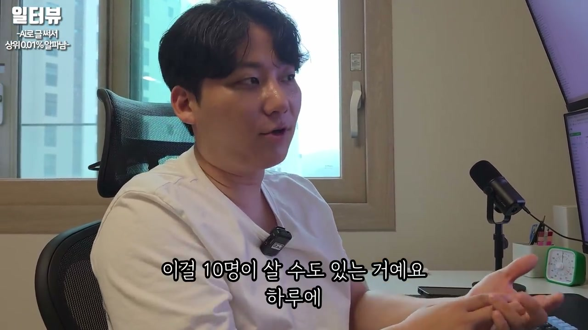
출연자는 블로그 글을 보다가 “이거 눌러서 들어가라”는 링크를 본 적 있냐고 묻는다. 이것이 어떤 식으로 수익이 되는지 설명하면서, 갤럭시 S25 리뷰 글을 쓰고 그 링크를 통해 갤럭시가 팔리면 수수료 2%, 예를 들어 3만 5천 원을 받을 수 있다고 말한다. 온라인에서는 사람이 직접 상대하지 않아도 클릭과 구매가 연결되면 수익이 발생한다는 것이다.
오프라인에서는 사람을 상대해 한 대를 파는 것도 힘들지만, 온라인에서는 글을 보고 누군가가 누르기만 하면 구매가 일어날 수 있다. 핸드폰 시즌에는 하루에 10여 명이 살 수도 있고, 이런 것만 하는 사람들도 있다고 설명한다. 이 구조를 알면 단순한 리뷰 글도 제휴 수익의 통로가 된다.
그는 쿠팡 외에도 타불라, 카카오, 네이버, 인스타그램, 페이스북 등 다양한 플랫폼을 연결할 수 있다고 말한다. 한 플랫폼에만 의존하지 않고, 여러 수익 루트를 한 글이나 한 사이트에 연결하는 것이 핵심이다. 그래서 “한 개로 여러 군데에서 돈 받는 구조”를 만드는 것이 중요하다고 반복한다.
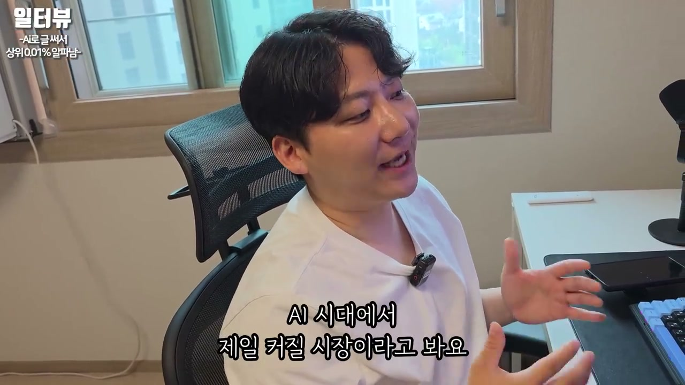
출연자는 네이버가 요즘 돈을 많이 주고 있고, 인스타그램·페이스북도 있으며, 네이버도 곧 따라한다고 말한다. 네이버는 포인트 형태로 정립되고, 계속 쌓이는 구조라고 설명한다. 구글이 돈을 많이 줄 수 있는 이유는 광고 수익을 투명하게 공개하고 나눠 주는 구조가 있기 때문이라고 말한다.
반면 네이버는 아직 그 구조를 완전히 만들지 못했기 때문에 포인트로 주는 단계라고 설명한다. 네이버, 카카오, 틱톡 모두 이제 돈을 주려고 한다고 말한다. 원래는 우리가 콘텐츠를 만들면 그 콘텐츠에 붙은 광고 수익을 받아야 하는데, 기존 구조에서는 플랫폼이 많이 가져갔고, 이제 구글과 인스타그램 같은 플랫폼이 그 구조를 깨고 있다고 해석한다.
그는 앞으로 AI 시대에 이 시장이 가장 커질 시장 중 하나라고 본다. 콘텐츠 생산과 재가공이 쉬워지고, 여러 플랫폼이 창작자에게 돈을 주기 시작하면 정보와 콘텐츠를 다루는 사람이 더 큰 기회를 잡을 수 있다는 논리다. 그래서 단순 블로그가 아니라 AI 시대의 콘텐츠 수익화 시장 전체를 보고 있다.
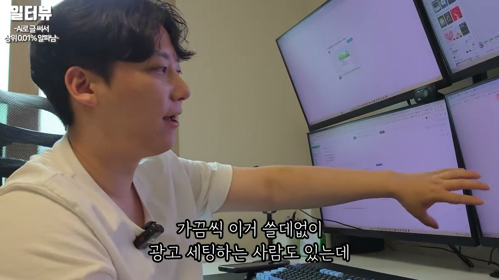
출연자는 자신이 운영하는 블로그를 보여주며 네이버가 글에 임의로 광고를 넣는다고 설명한다. 광고가 보이는지 묻고, 진행자는 처음 보는 사람은 광고인지 모를 수도 있겠다고 반응한다. 출연자는 이것도 광고이고 저것도 광고라고 설명하면서, 자동으로 들어가는 광고 구조를 보여준다.
그는 구글 광고의 장점은 티가 잘 안 난다는 점이라고 말한다. 광고인지 아닌지 구분이 잘 안 되고, 맞춤 광고가 뜬다고 설명한다. 심지어 구글이 우리의 목소리를 듣고 맞춤 광고를 띄운다고 주장하며, 김치찌개 이야기를 하면 어느 순간 김치찌개 광고가 뜬다는 예를 든다.
이 주장은 실제 플랫폼의 개인화 광고에 대한 그의 체감 설명에 가깝다. 핵심은 광고를 직접 세팅하지 않아도 검색·관심사·콘텐츠 맥락에 맞춰 광고가 붙고, 블로거는 글만 잘 쓰면 된다는 메시지다. 그는 몇억을 버는 동안 광고 세팅을 한 번도 해본 적이 없고, 필요 없다고 말한다.
출연자는 광고를 넣으려면 일종의 “이력서”를 제출해야 한다고 표현한다. 즉 광고 플랫폼이 보기에 그럴싸하게 보이는 작업이 필요하다는 뜻이다. 승인용 글을 만들고, 플랫폼이 수익화를 허용할 만한 상태로 블로그를 꾸미는 과정이 필요하다고 설명한다.
진행자가 지금까지 배운 사람이 4만 7천 명 정도 된다고 들었다고 말하자, 출연자는 자신에게 돈을 안 주고 배운 사람들까지 그 정도가 된다고 답한다. 그는 애드포스트의 경우 합격 안 된 사람을 한 명도 못 봤고, 100%라고 말한다. 네이버는 그냥 다 해준다고 표현한다.
하지만 애드센스는 다르다. 애드센스는 좀 어렵고, 안 되는 사람도 있을 수 있다고 말한다. 그래서 초보자에게는 네이버부터 해보라고 권한다. 애드포스트와 애드센스의 차이는 누가 돈을 주느냐, 이름이 무엇이냐의 차이에 가깝고, 돈 버는 방법 자체는 비슷하다고 설명한다.
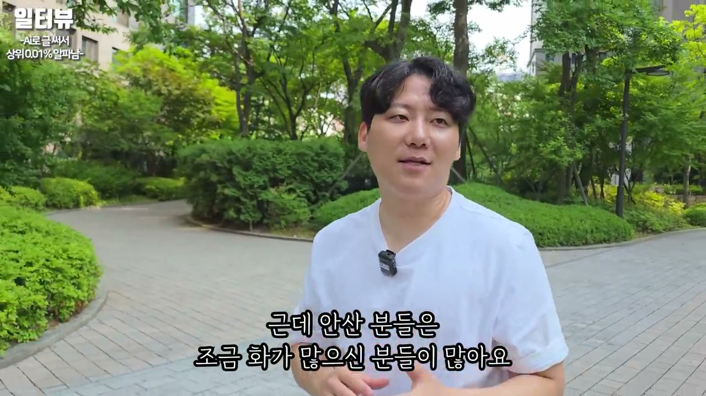
후반부에서는 수익 구조 설명에서 생활 변화 이야기로 넘어간다. 출연자는 경기도에서 가장 비싼 아파트라고 들은 곳에 와서 한 번 경험해 보자고 생각했다고 말한다. 헬스장과 수영장이 있는 아파트를 처음 봤고, 자신이 알던 세상이 전부가 아니었다는 걸 느꼈다고 한다.
그는 안산 출신이며 안산을 좋아한다고 말한다. 다만 안산 중앙동 같은 곳은 조금만 쳐다봐도 싸움이 날 것 같은 분위기가 있고, 사람들에게 여유가 적은 느낌을 받았다고 표현한다. 과천에 와서는 사람들이 웃고 있고 평화롭고, 배려를 많이 받는 느낌이라고 말한다.
이 이야기는 단순한 지역 비교라기보다, 경제적 변화가 생활 환경과 사고방식을 바꾸었다는 맥락에서 나온다. 그는 자신이 갇힌 곳에 살았고, 더 해외도 많이 가야겠다는 생각을 하게 되었다고 말한다. 제공된 1편은 여기서 “내가 안 된다고 해서…”라는 식의 사고 전환 이야기로 이어지다 끊긴다.
“사람들은 이런 거 만들어서 진짜 온라인 건물인 거죠.”
“정리하시면 블로그를 개선한 다음에 승인용 글을 작성하고 승인을 받는다. 이게 끝이에요.”
“제가 애드센스로 가장 많이 벌었던 게 한 달에 53만 달러.”
“은행에서 전화 왔어요. 혹시 뭐 불법이라 하냐고.”
“저는 이렇게 물건을 파는 게 아니라 온라인으로 돈을 번다고 보시면 되는데요.”
“온라인이다 보니까 리스크가 일단 없고, 재고가 아예 없잖아요.”
“오프라인에 가게를 하나 차리려고 해도 3억이 들어가잖아요.”
“근데 이거는 온라인 건물이라고 제가 비유를 하는데, 하나 더 만들면 바로 만들 수 있어요.”
“누적으로 오로지 구글만으로 번 게 40억이고, 거기서 순수익이 30억.”
“글 하나에서 전국으로 그냥 다 팔 수 있는 거예요. 그러니까 한계가 없는 거죠.”
“첫 달에 300만 원, 두 번째 달에 500만 원, 세 번째 달에 700만 원 벌었거든요.”
“돈 버는 게 정보 싸움이라고 생각하는데, 안 될 것도 되게 해야 되는데 될 것도 안 된다고 하면 전 안 된다고 생각하거든요.”
“무조건 하세요. 해보면 알아요. 왜 이게 돈이 되는구나를.”
“글 한 개로 저는 8,000달러 정도 번 것 같은데, 1,000만 원 정도 되네요.”
“자고 일어나면 4,500만 원이 벌려 있는 거예요.”
“재탕한다고 또 다 돈이 되진 않거든요. 돈이 될 수 있게 재탕을 해야 되는 거예요.”
“온라인 세계는 정보가 돈이에요. 그리고 이게 계속 바뀌어요.”
“기술을 배워야 되는데 투자를 안 하는 거예요. 공짜로만 하고 싶은 거예요.”
“네이버부터 한번 해보세요.”
“누가 돈 주냐에 따라서 언어만 다른 거예요. 돈 버는 방법은 똑같아요.”
이 영상 1편은 구글 애드센스와 블로그 기반 수익화를 “온라인 건물”이라는 비유로 설명한다. 출연자는 자신의 수익 규모, 회사 매출, 회계사 검증, 계좌 자료, 여러 플랫폼 수익을 제시하며 블로그와 검색 광고가 큰 돈을 만들 수 있다고 주장한다. 핵심 논리는 단순하다. 사람들이 검색할 만한 정보를 글로 만들고, 그 글에 광고와 제휴 수익 구조를 붙이며, 한 콘텐츠를 여러 플랫폼에 맞게 재가공하면 반복 수익이 생긴다는 것이다.
실용적 시사점은 세 가지다. 첫째, 검색 의도와 구매 의도가 있는 키워드를 찾는 것이 중요하다. 둘째, 글 하나를 네이버, 구글, 카드뉴스, 스레드, 인스타그램, 제휴 링크 등 여러 수익 루트로 확장해야 한다. 셋째, 이 일은 공짜로 대충 되는 것이 아니라 플랫폼 정책, 승인 구조, 광고 배치, SEO, 콘텐츠 재가공을 학습해야 하는 기술직에 가깝다는 점이다.
동시에 주의할 점도 있다. 영상 속 수익 수치와 플랫폼 전망은 출연자의 주장과 제시 자료를 바탕으로 한 것이므로, 실제 실행 전에는 각 플랫폼의 광고 정책, 저작권, 세무 처리, 제휴 마케팅 규정, 허위·과장 광고 금지 기준을 반드시 확인해야 한다. 특히 방송 내용을 활용한 글, 제품 구매 유도, 광고 클릭 구조, 맞춤 광고 설명 등은 법적·정책적 경계가 있을 수 있다. 이 1편은 성공 사례와 수익 구조를 강하게 제시하는 도입부이며, 이어지는 2편에서는 제공된 마지막 흐름상 “안 된다고 생각하는 사고방식”과 더 구체적인 실행·확장 논의가 이어질 가능성이 높다.
댓글
GitHub 이슈 기반 댓글 시스템입니다.